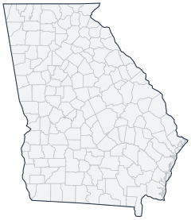

Historical county changes, 1790–1990 › Georgia

| Name↕ | Unit↕ | Existed↕ | FIPS↕ |
|---|---|---|---|
| Appling County | county | 1820–1990 | 13001 |
| Atkinson County | county | 1920–1990 | 13003 |
| Bacon County | county | 1920–1990 | 13005 |
| Baker County | county | 1830–1990 | 13007 |
| Baldwin County | county | 1810–1990 | 13009 |
| Banks County | county | 1860–1990 | 13011 |
| Barrow County | county | 1920–1990 | 13013 |
| Bartow County | county | 1840–1990 | 13015 |
| Ben Hill County | county | 1910–1990 | 13017 |
| Berrien County | county | 1860–1990 | 13019 |
| Bibb County | county | 1830–1990 | 13021 |
| Bleckley County | county | 1920–1990 | 13023 |
| Brantley County | county | 1930–1990 | 13025 |
| Brooks County | county | 1860–1990 | 13027 |
| Bryan County | county | 1800–1990 | 13029 |
| Bulloch County | county | 1800–1990 | 13031 |
| Burke County | county | 1790–1990 | 13033 |
| Butts County | county | 1830–1990 | 13035 |
| Calhoun County | county | 1860–1990 | 13037 |
| Camden County | county | 1790–1990 | 13039 |
| Campbell County | county | 1830–1930 | 13041 |
| Candler County | county | 1920–1990 | 13043 |
| Carroll County | county | 1830–1990 | 13045 |
| Catoosa County | county | 1860–1990 | 13047 |
| Charlton County | county | 1860–1990 | 13049 |
| Chatham County | county | 1790–1990 | 13051 |
| Chattahoochee County | county | 1860–1990 | 13053 |
| Chattooga County | county | 1840–1990 | 13055 |
| Cherokee County | county | 1840–1990 | 13057 |
| Clarke County | county | 1810–1990 | 13059 |
| Clay County | county | 1860–1990 | 13061 |
| Clayton County | county | 1860–1990 | 13063 |
| Clinch County | county | 1850–1990 | 13065 |
| Cobb County | county | 1840–1990 | 13067 |
| Coffee County | county | 1860–1990 | 13069 |
| Colquitt County | county | 1860–1990 | 13071 |
| Columbia County | county | 1800–1990 | 13073 |
| Cook County | county | 1920–1990 | 13075 |
| Coweta County | county | 1830–1990 | 13077 |
| Crawford County | county | 1830–1990 | 13079 |
| Crisp County | county | 1910–1990 | 13081 |
| Dade County | county | 1840–1990 | 13083 |
| Dawson County | county | 1860–1990 | 13085 |
| DeKalb County | county | 1830–1990 | 13089 |
| Decatur County | county | 1830–1990 | 13087 |
| Dodge County | county | 1880–1990 | 13091 |
| Dooly County | county | 1830–1990 | 13093 |
| Dougherty County | county | 1860–1990 | 13095 |
| Douglas County | county | 1880–1990 | 13097 |
| Early County | county | 1820–1990 | 13099 |
| Echols County | county | 1860–1990 | 13101 |
| Effingham County | county | 1790–1990 | 13103 |
| Elbert County | county | 1800–1990 | 13105 |
| Emanuel County | county | 1820–1990 | 13107 |
| Evans County | county | 1920–1990 | 13109 |
| Fannin County | county | 1860–1990 | 13111 |
| Fayette County | county | 1830–1990 | 13113 |
| Floyd County | county | 1840–1990 | 13115 |
| Forsyth County | county | 1840–1990 | 13117 |
| Franklin County | county | 1790–1990 | 13119 |
| Fulton County | county | 1860–1990 | 13121 |
| Gilmer County | county | 1840–1990 | 13123 |
| Glascock County | county | 1860–1990 | 13125 |
| Glynn County | county | 1790–1990 | 13127 |
| Gordon County | county | 1850–1990 | 13129 |
| Grady County | county | 1910–1990 | 13131 |
| Greene County | county | 1790–1990 | 13133 |
| Gwinnett County | county | 1820–1990 | 13135 |
| Habersham County | county | 1820–1990 | 13137 |
| Hall County | county | 1820–1990 | 13139 |
| Hancock County | county | 1800–1990 | 13141 |
| Haralson County | county | 1860–1990 | 13143 |
| Harris County | county | 1830–1990 | 13145 |
| Hart County | county | 1860–1990 | 13147 |
| Heard County | county | 1840–1990 | 13149 |
| Henry County | county | 1830–1990 | 13151 |
| Houston County | county | 1830–1990 | 13153 |
| Irwin County | county | 1820–1990 | 13155 |
| Jackson County | county | 1800–1990 | 13157 |
| Jasper County | county | 1810–1990 | 13159 |
| Jeff Davis County | county | 1910–1990 | 13161 |
| Jefferson County | county | 1800–1990 | 13163 |
| Jenkins County | county | 1910–1990 | 13165 |
| Johnson County | county | 1860–1990 | 13167 |
| Jones County | county | 1810–1990 | 13169 |
| Lamar County | county | 1930–1990 | 13171 |
| Lanier County | county | 1930–1990 | 13173 |
| Laurens County | county | 1810–1990 | 13175 |
| Lee County | county | 1830–1990 | 13177 |
| Liberty County | county | 1790–1990 | 13179 |
| Lincoln County | county | 1800–1990 | 13181 |
| Long County | county | 1930–1990 | 13183 |
| Lowndes County | county | 1830–1990 | 13185 |
| Lumpkin County | county | 1840–1990 | 13187 |
| Macon County | county | 1840–1990 | 13193 |
| Madison County | county | 1820–1990 | 13195 |
| Marion County | county | 1830–1990 | 13197 |
| McDuffie County | county | 1880–1990 | 13189 |
| McIntosh County | county | 1800–1990 | 13191 |
| Meriwether County | county | 1830–1990 | 13199 |
| Miller County | county | 1860–1990 | 13201 |
| Milton County | county | 1860–1930 | 13203 |
| Mitchell County | county | 1860–1990 | 13205 |
| Monroe County | county | 1830–1990 | 13207 |
| Montgomery County | county | 1800–1990 | 13209 |
| Morgan County | county | 1810–1990 | 13211 |
| Murray County | county | 1840–1990 | 13213 |
| Muscogee County | county | 1830–1990 | 13215 |
| Newton County | county | 1830–1990 | 13217 |
| Oconee County | county | 1880–1990 | 13219 |
| Oglethorpe County | county | 1800–1990 | |
| Paulding County | county | 1840–1990 | |
| Peach County | county | 1930–1990 | 13225 |
| Pickens County | county | 1860–1990 | 13227 |
| Pierce County | county | 1860–1990 | 13229 |
| Pike County | county | 1830–1990 | 13231 |
| Polk County | county | 1860–1990 | 13233 |
| Pulaski County | county | 1810–1990 | 13235 |
| Putnam County | county | 1810–1990 | 13237 |
| Quitman County | county | 1860–1990 | 13239 |
| Rabun County | county | 1820–1990 | 13241 |
| Randolph County | county | 1830–1990 | 13243 |
| Richmond County | county | 1790–1990 | 13245 |
| Rockdale County | county | 1880–1990 | 13247 |
| Schley County | county | 1860–1990 | 13249 |
| Screven County | county | 1800–1990 | 13251 |
| Seminole County | county | 1930–1990 | 13253 |
| Spalding County | county | 1860–1990 | 13255 |
| Stephens County | county | 1910–1990 | 13257 |
| Stewart County | county | 1840–1990 | 13259 |
| Sumter County | county | 1840–1990 | 13261 |
| Talbot County | county | 1830–1990 | 13263 |
| Taliaferro County | county | 1830–1990 | 13265 |
| Tattnall County | county | 1810–1990 | 13267 |
| Taylor County | county | 1860–1990 | 13269 |
| Telfair County | county | 1810–1990 | 13271 |
| Terrell County | county | 1860–1990 | 13273 |
| Thomas County | county | 1830–1990 | 13275 |
| Tift County | county | 1910–1990 | 13277 |
| Toombs County | county | 1910–1990 | 13279 |
| Towns County | county | 1860–1990 | 13281 |
| Treutlen County | county | 1920–1990 | 13283 |
| Troup County | county | 1830–1990 | 13285 |
| Turner County | county | 1910–1990 | 13287 |
| Twiggs County | county | 1810–1990 | 13289 |
| Union County | county | 1840–1990 | 13291 |
| Upson County | county | 1830–1990 | 13293 |
| Walker County | county | 1840–1990 | 13295 |
| Walton County | county | 1820–1990 | 13297 |
| Ware County | county | 1830–1990 | 13299 |
| Warren County | county | 1800–1990 | 13301 |
| Washington County | county | 1790–1990 | 13303 |
| Wayne County | county | 1810–1990 | 13305 |
| Webster County | county | 1860–1990 | 13307 |
| Wheeler County | county | 1920–1990 | 13309 |
| White County | county | 1860–1990 | 13311 |
| Whitfield County | county | 1860–1990 | 13313 |
| Wilcox County | county | 1860–1990 | 13315 |
| Wilkes County | county | 1790–1990 | 13317 |
| Wilkinson County | county | 1810–1990 | 13319 |
| Worth County | county | 1860–1990 | 13321 |
Note: Decimals in FIPS codes come from Forstall, who gives every county a code, including counties that no longer exist. A county abolished between 1930 and 1990 keeps the code it had. However, a county which was abolished prior to 1930 never received a code. Such a county is given the code of the county which precedes it alphabetically plus a decimal to hold its place in the list.
Source: Richard L. Forstall (1996), Population of States and Counties of the United States: 1790 to 1990, U.S. Bureau of the Census (public domain). Always check a row against the scan it links to.